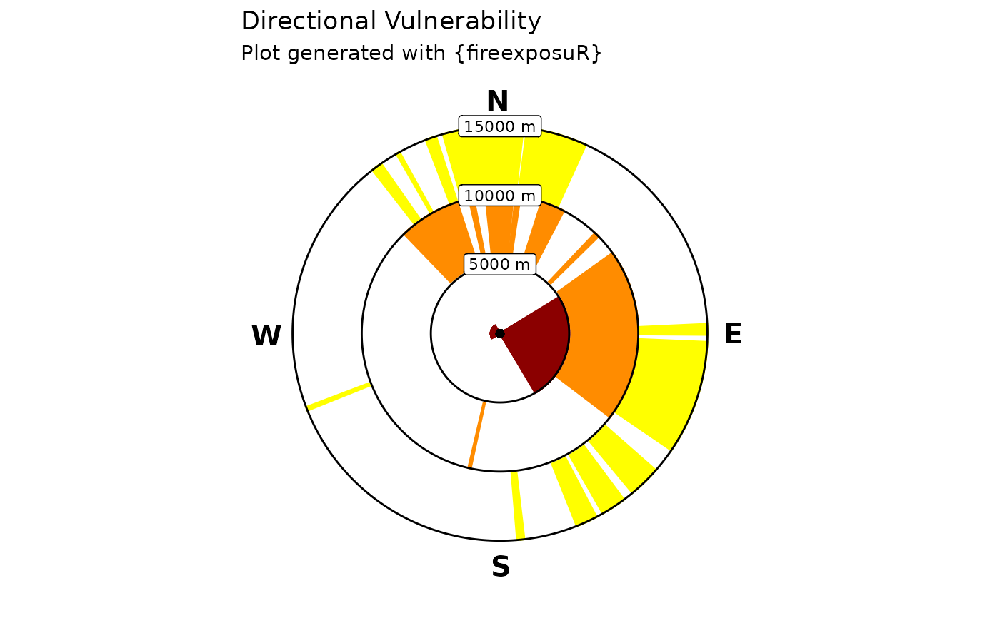
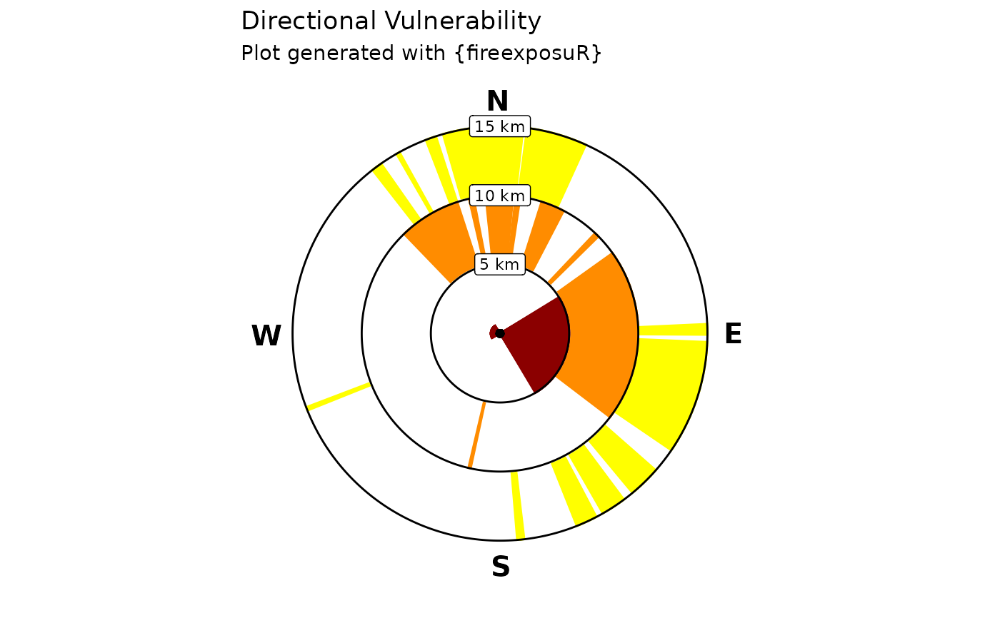

fire_exp_dir_plot() plots the viable directional exposure
pathways identified with fire_exp_dir() in a standardized radial plot.
Arguments
- transects
SpatVector (output from
fire_exp_dir())- labels
(Optional) a vector of three strings. Custom formatting for the distance labels on the transect segments. If left blank, the function will automatically label the distances in meters.
- title
(Optional) String. A custom title for the plot. The default is
"Directional Vulnerability"
Details
The radial plot produced by this function is based on the figures presented in Beverly and Forbes (2023). The plots put the transect origin (the value) at the center as a point, and labels the distances from the value at the end of the transect segments. If the value used to generate the transects was a polygon feature, the transect origins will still be drawn as a center point.
The plot is returned as a ggplot object which can be exported/saved to multiple image file formats.
References
Beverly JL, Forbes AM (2023) Assessing directional vulnerability to wildfire. Natural Hazards 117, 831-849. doi:10.1007/s11069-023-05885-3
Examples
# read example hazard data
hazard_file_path <- "extdata/hazard.tif"
hazard <- terra::rast(system.file(hazard_file_path, package = "fireexposuR"))
# generate an example point
point_wkt <- "POINT (345000 5876000)"
point <- terra::vect(point_wkt, crs = hazard)
# compute exposure metric
exposure <- fire_exp(hazard)
# generate transects
transects <- fire_exp_dir(exposure, point)
# radial plot
fire_exp_dir_plot(transects)

# customize labels
fire_exp_dir_plot(transects, labels = c("5 km", "10 km", "15 km"))
